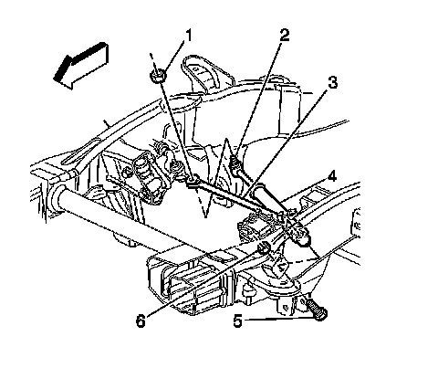
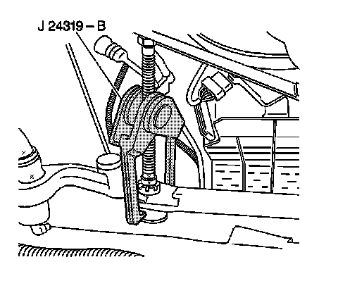

Steering Damper: Service and Repair
Steering Damper Replacement
Tools Required
J 24319-B Universal Steering Linkage Puller
Removal Procedure

1. Raise the vehicle. Support the vehicle with safety stands. Refer to Lifting and Jacking the Vehicle.
2. Remove the engine protection shield, if equipped.
Important: Do not reuse the nut.
3. Remove the steering damper (2) ball stud nut (1).

4. Remove the steering damper ball stud from the relay rod using the J 24319-B.
Important: Do not reuse the nut.
5. Remove the steering damper mounting bolt (5) and the nut (6).
6. Remove the steering damper (4) from the vehicle.
7. Inspect the following parts:
^ The steering damper for leaks and damage
^ The mounting bolts and the nuts for damage or corrosion
Installation Procedure
1. Install the steering damper (4).
2. Install the mounting bolt (5) and a new prevailing torque nut (6).
3. Install the steering damper ball stud (2) to the relay rod (3).
Notice: Refer to Fastener Notice.
4. Install the prevailing torque nuts.
Tighten the steering damper mounting nuts to 40 N.m (30 lb ft).
5. Install the engine protection shield, if equipped.
6. Lower the vehicle.